Los dispositivos de comunicación son aparatos que generan y/o reciben señales analógicas o digitales, permitiendo el intercambio de información. Estos medios fueron creados por el ser humano a lo largo de su evolución histórica.
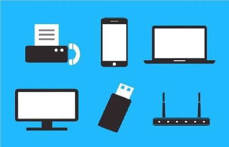Un dispositivo de comunicación es cualquier aparato que pueda ser empleado para transmitir un mensaje. En tiempos actuales se constituyen como los principales protagonistas de las tecnologías de la comunicación (TIC).
Como dispositivos de comunicación, las computadoras son más rápidas y eficientes con relación a otros dispositivos tradicionales como el teléfono y el correo.
A continuación, se presentan algunos de los dispositivos de almacenamiento más comunes:
Router: También conocido como encaminador, enrutador, direccionador o ruteador, es un dispositivo de hardware usado para la interconexión de redes informáticas que permite asegurar el direccionamiento de paquetes de datos entre ellas o determinar la mejor ruta que deben tomar. Opera en la capa tres del modelo OSI.
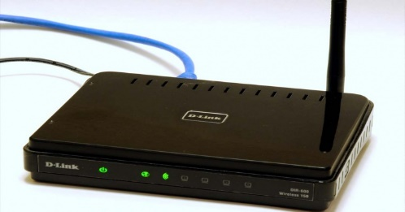Módem: Es un dispositivo que transforma las señales digitales en analógicas a través de un proceso denominado modulación, y las analógicas en digitales a través de la demodulación.
Su función es enviar la señal moduladora a través de otra señal denominada portadora. El módem surgió a raíz de la necesidad de comunicar computadoras para compartir datos entre ellas.
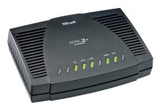GPS: Este aparato permite determinar la posición exacta y precisa de un objeto en la Tierra. Se utiliza para la localización de niños, ancianos y personas con discapacidad.
También se usa para la ubicación de vehículos como medida preventiva contra robos.
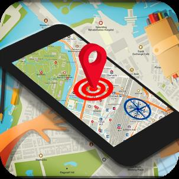Bluetooth: Es una especificación industrial para Redes Inalámbricas de Área Personal (WPAN) que posibilita la transmisión de voz y datos entre diferentes dispositivos mediante un enlace por radiofrecuencia en la banda ISM de los 2,4 GHz.
FAX: A partir de la señal telefónica, el FAX podía transmitir documentos y otros tipos de textos de un dispositivo a otro a amplias distancias. Era la evolución del teletipo, funcionando como una fotocopiadora. Sin embargo, las nuevas tecnologías lo han dejado en desuso.
El propósito principal de los medios de comunicación es, precisamente, comunicar, pero según su tipo de ideología pueden especializarse en; informar, educar, transmitir, entretener, formar opinión, enseñar, controlar, etc.
Las características positivas de los medios de comunicación residen en que posibilitan que amplios contenidos de información lleguen a extendidos lugares del planeta en forma inmediata. Los medios de comunicación, de igual manera, hacen posible que muchas relaciones personales se mantengan unidas o, por lo menos, no desaparezcan por completo.
Las características negativas recaen en la manipulación de la información y el uso de la misma para intereses propios de un grupo específico. En muchos casos, tiende a formar estereotipos, seguidos por muchas personas gracias al alcance que adquiere el mensaje en su difusión (como sucede al generalizar personas o grupos).
Servidores (server) es una computadora dedicada a servir, brindar o proporcionar información como respuesta a solicitudes externas. Estas solicitudes son destinadas a recursos que suelen ser compartidos por los usuarios en una red de computadoras.
* Estaciones de trabajo (nodo o cliente) Nodo es la conexión de red, cliente es el pc o máquina que se use y estación de trabajo es la combinación de eso más los elementos externos como el usuario.
* Recursos y periféricos compartidos. Entre los recursos compartidos se incluyen los dispositivos de almacenamiento ligados al servidor, las unidades de discos ópticos, las impresoras, los trazadores y el resto de equipos que puedan ser utilizados por cualquiera en la red. Un servidor de impresión ofrece la misma conectividad a una impresora que una tarjeta adaptadora de red ofrece a una computadora.
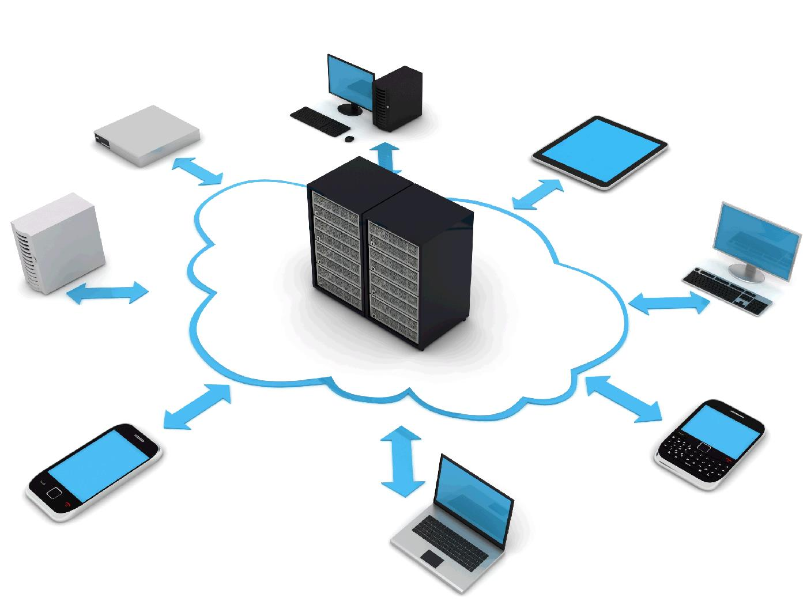Los medios de comunicación son los instrumentos mediante los cuales se informa y se comunica de forma masiva; son la manera como las personas, los miembros de una sociedad o de una comunidad se enteran de lo que sucede a su alrededor a nivel económico, político, social, etc.
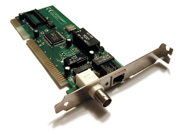Los medios de comunicación son la representación física de la comunicación en nuestro mundo; es decir, son el canal mediante el cual la información se obtiene, se procesa y, finalmente, se expresa, se comunica.
Tenemos, por ejemplo:
* Modem
* Tarjeta de red
Hay diversos tipos de adaptadores en función del tipo de cableado o arquitectura que se utilice en la red, pero actualmente el más común es del tipo Ethernet utilizando una interfaz o conector RJ-45.
Son elementos o equipos electrónicos de una red muy básicos que permiten la interconexión de varias computadoras o recursos para formar una red. La variedad de tipos y características de estos equipos es muy grande.
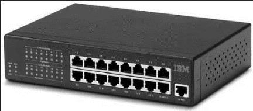Prolongan la longitud de la red uniendo dos segmentos y amplificando la señal. Pero junto con ella amplifican también el ruido. La red sigue siendo una sola, con lo cual sigue siendo válidas las limitaciones en cuanto al número de estaciones que pueden compartir el medio.
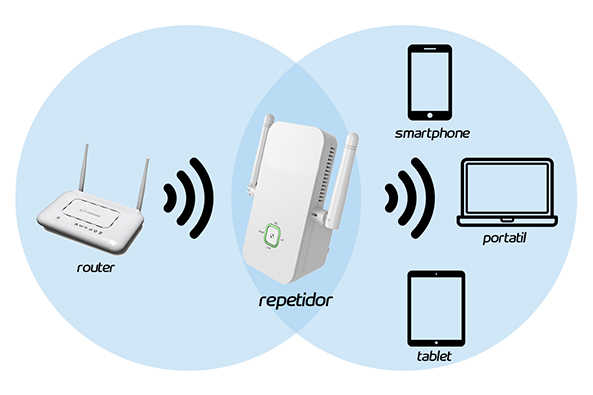Son los equipos que unen dos redes similares, su funcionalidad es muy parecida a la de los hubs (conectadores).
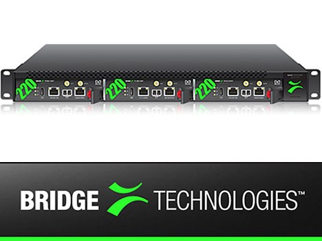Son equipos o dispositivos que permiten interconectar redes con protocolos y arquitecturas diferentes a todos los niveles de comunicación. Su propósito es traducir la información del protocolo utilizado en una red al protocolo usado en la red de destino
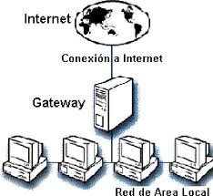 La interfaz es un dispositivo de tipo informático que permite comunicar dos sistemas que no hablan el mismo lenguaje: por ejemplo, un canal de comunicación que transporte datos de tipo analógico y un terminal que procese datos de tipo digital, como puede ser el ordenador.
-Hardware
-Software
La interfaz de usuario es el medio con que el usuario puede comunicarse con una máquina, un equipo o una computadora, y comprende todos los puntos de contacto entre el usuario y el equipo.
Existen diferentes tipos de interfaz de usuario, entre ellas están:
Interfaces alfanuméricas: son las que solo presentan texto.
Interfaces gráficas de usuario: son las que permiten comunicarse con el ordenador de una forma muy rápida e intuitiva representando gráficamente los elementos de control y medida.
Interfaces táctiles: son las que representan gráficamente un "panel de control" en una pantalla sensible que permite interactuar con el dedo de forma similar a si se accionara un control físico.
Las interfaces de comunicación Las interfaces de comunicación son cables y dispositivos mediante los cuales la Unidad Central se comunica con sus periféricos a través del enlace de sus respectivos puertos.
Puertos de serie: esta interfaz recibe este nombre debido a la transmisión de datos en serie, o utilizar un único medio de comunicación para transmitir datos, algo un poco.
Cables y Conectores: el uso más frecuente conector de interfaz, 9 o 25 pines (DB-9 y DB-25). En impresoras, la conexión es una mujer, mientras que, en los cables, los conectores son los de tipo machista, tenga en cuenta que este cable sólo puede ser de otras disposiciones en el formato de su conector.
Puerto paralelo: el interfaz de puerto paralelo Centronics es el más utilizado para conectar impresoras y ordenadores debido a su alta velocidad y facilidad de configuración, sin embargo, la distancia del equipo no deberá exceder de 3 (m de distancia) hay riesgo de pérdida de datos debido a la resistencia eléctrica ofrece la comunicación por cable.
En el campo de las telecomunicaciones, un protocolo de comunicaciones es el conjunto de reglas normalizadas para la representación, señalización, autenticación y detección de errores necesario para enviar información a través de un canal de comunicación.
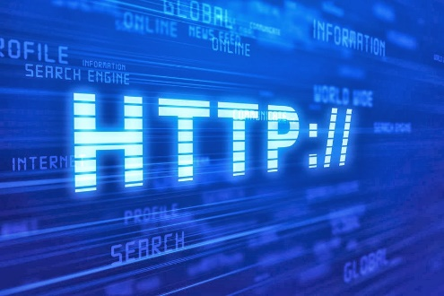Un ejemplo de un protocolo de comunicaciones simple adaptado a la comunicación por voz es el caso de un locutor de radio hablando a sus radioyentes. Los protocolos de comunicación para la comunicación digital por redes de computadoras tienen características destinadas a asegurar un intercambio de datos fiable a través de un canal de comunicación imperfecto.
El protocolo TCP/IP: Es el conjunto de protocolos básicos de comunicación, de redes, que permite la transmisión de información en redes de ordenadores. Una conexión TCP no es más que es una corriente de bytes, no una corriente de mensajes o textos por así decirlo.
TCP (Transmisión Control Protocol): este es un protocolo orientado a las comunicaciones y ofrece una transmisión de datos confiable. El TCP es el encargado del ensamble de datos provenientes de las capas superiores hacia paquetes estándares, asegurándose que la transferencia de datos se realice correctamente.
HTTP: este protocolo permite la recuperación de información y realizar búsquedas indexadas que permiten saltos intertextuales de manera eficiente. Por otro lado, permiten la transferencia de textos de los más variados formatos, no sólo HTML. El protocolo HTTP fue desarrollado para resolver los problemas surgidos del sistema hipermedial distribuidos en diversos puntos de la red.
SSH: Este fue desarrollado con el fin de mejorar la seguridad en las comunicaciones de internet. Para lograr esto el SSH elimina el envío de aquellas contraseñas que no son cifradas y codificando toda la información transferida
UDP: el protocolo de datagrama de usuario está destinado a aquellas comunicaciones que se realizan sin conexión y que no cuentan con mecanismos para transmitir datagramas. Esto se contrapone con el TCP que está destinado a comunicaciones con conexión. Este protocolo puede resultar poco confiable excepto si las aplicaciones utilizadas cuentan con verificación de confiabilidad.
SNMP: Este usa el Protocolo de Datagrama del Usuario (PDU) como mecanismo para el transporte. Por otro lado, utiliza distintos términos de TCP/IP como agentes y administradores en lugar de servidores y clientes. El administrador se comunica por medio de la red, mientras que el agente aporta la información sobre un determinado dispositivo.
TFTP: Este protocolo de transferencia se caracteriza por sencillez y falta de complicaciones. No cuenta con seguridad alguna y también utiliza el Protocolo de Datagrama del Usuario como mecanismo de transporte.
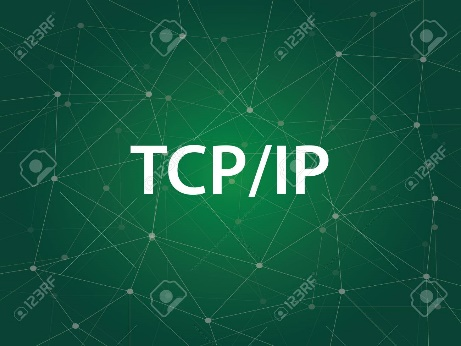Las redes deben ser capaces de transferir datos de un dispositivo a otro con total exactitud, si los datos recibidos no son idénticos a los emitidos, el sistema de comunicación es inútil. Sin embargo, siempre que se transmiten de un origen a un destino, se pueden corromper por el camino. Los sistemas de comunicación deben tener mecanismos para detectar y corregir errores que alteren los datos recibidos debido a múltiples factores de la transmisión.
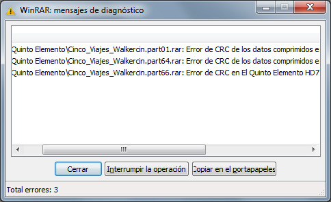Interferencias, calor, magnetismo, etc., influyen en una señal electromagnética, esos factores pueden alterar la forma o temporalidad de una señal. Si la señal transporta datos digitales, los cambios pueden modificar el significado de los datos. Los errores posibles son:
Error de bit
Únicamente un bit de una unidad de datos determinada cambia de 1 a 0 o viceversa
Un error de bit altera el significado del dato. Son el tipo de error menos probable en una transmisión de datos serie, puesto que el intervalo de bit es muy breve (1/frecuencia) el ruido tiene que tener una duración muy breve. Sin embargo, si puede ocurrir en una transmisión paralela, en que un cable puede sufrir una perturbación y alterar un bit de cada byte.
Error de ráfaga.
El error de ráfaga significa que dos o más bits de la unidad de datos han cambiado. El error de ráfaga no significa necesariamente que los errores se produzcan en bits consecutivos. La longitud de la ráfaga se mide desde el primero hasta el último bit correcto, algunos bits intermedios pueden estar bien.
Detección.
Se conocen el tipo de errores que pueden existir, el problema es ser capaz de reconocerlos, dado que no se puede comparar el dato recibido con el original, sólo se podría saber que ha habido un error cuando se descodifique todo el mensaje y se vea que no tiene sentido. Sin embargo, existen determinadas técnicas sencillas y objetivas para detectar los errores producidos en la transmisión.
Redundancia.
La redundancia consiste en enviar dos veces cada unidad de datos, de forma que el dispositivo receptor puede hacer una comparación bit a bit entre ambos datos y detectar si ha habido errores, para corregirlos con el mecanismo apropiado. Esta técnica es muy exacta, pero enlentece la transmisión.
Verificación de redundancia vertical VRC
Es el mecanismo más frecuente y barato, la VRC se denomina a menudo verificación de paridad, y se basa en añadir un bit de redundancia, denominado bit de paridad, al final de cada unidad de datos, de forma que el número total de unos en la unidad (incluyendo el bit de paridad) sea par, o impar en el caso de la verificación de paridad impar.
Esta técnica permite reconocer un error de un único bit, y también de ráfaga siempre que el número total de bits cambiados sea impar. La función de paridad (par o impar) suma el dato y devuelve la cantidad de unos que tiene el dato, comparando la paridad real (par o impar) con la esperada (par o impar)
Verificación de redundancia longitudinal LRC
En esta técnica, los bloques de bits se organizan en forma de tabla (filas y columnas), a continuación, se calcula un bit de paridad para cada columna y se crea una nueva fila de bits, que serán los bits de paridad de todo el bloque, a continuación, se añaden los bits de paridad al dato y se envían al receptor.
Típicamente los datos se agrupan en unidades de múltiplos de 8 -1 byte- (8, 16,24,32 bits) la función coloca los octetos uno debajo de otro y calcula la paridad de los bits primeros, de los segundos, etc, generando otro octeto cuyo primer bit es el de paridad de todos los primeros bits, etc.

La técnica añade unos bits de CRC, de la siguiente manera en tres pasos básicos: en primer lugar se añade una tira de n ceros, siendo n el número inmediatamente menor al número de bits del divisor predefinido (que tiene n+1 bits), el segundo paso es dividir la nueva unidad de datos por el divisor predefinido usando un proceso de división binaria, el resto que quedara sería los bits de CRC a añadir, el tercer paso es sustituir los n bits añadidos en el paso primero por los n bits del resto de la operación del segundo paso, el dato final será divisible exactamente por el divisor predefinido. La imagen muestra el esquema del proceso.